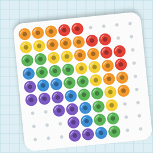

写真の色が似る数字ぬりえ
自分の写真を、色がよく似る数字の塗り絵に。塗り終えたら、アイロンビーズの図案にもなります。
写真を1枚選ぶと、マス目の数字ぬりえになります。番号のマスを、同じ番号の色の粒で塗っていくと、写真が絵になって出てきます。
- 色がよく似る：写真の色を、人の目の感じ方に近い色の物さし（Lab）で計って、似た色どうしをまとめます。元の写真と仕上がりを左右に並べ、「色の近さ ◯点」を見ながら、マスの数（24〜64）と色の数（8〜24）を決められます
- アイロンビーズの板の上で塗る：塗るとピンの上に色の粒が置かれます。1本指でなぞる・たたいて塗り、2本指で動かす・近づける。ちがう番号のマスは塗れないので、まとめてなぞっても大丈夫です
- 「さがす」で残りのマスへ、「見本」で元の写真を小さく
- 塗り終えると、アイロンビーズの図案になります：番号つきのマス目、色ごとの粒の数、29×29 の板の枚数。画像で書き出せます
- 入っている絵 24枚（季節・食べ物・生き物・景色）
- 塗った所は1マスごとに残ります。登録・課金はありません。画面のいちばん下に小さな広告が出ます（塗っている途中に動画の広告は出ません）